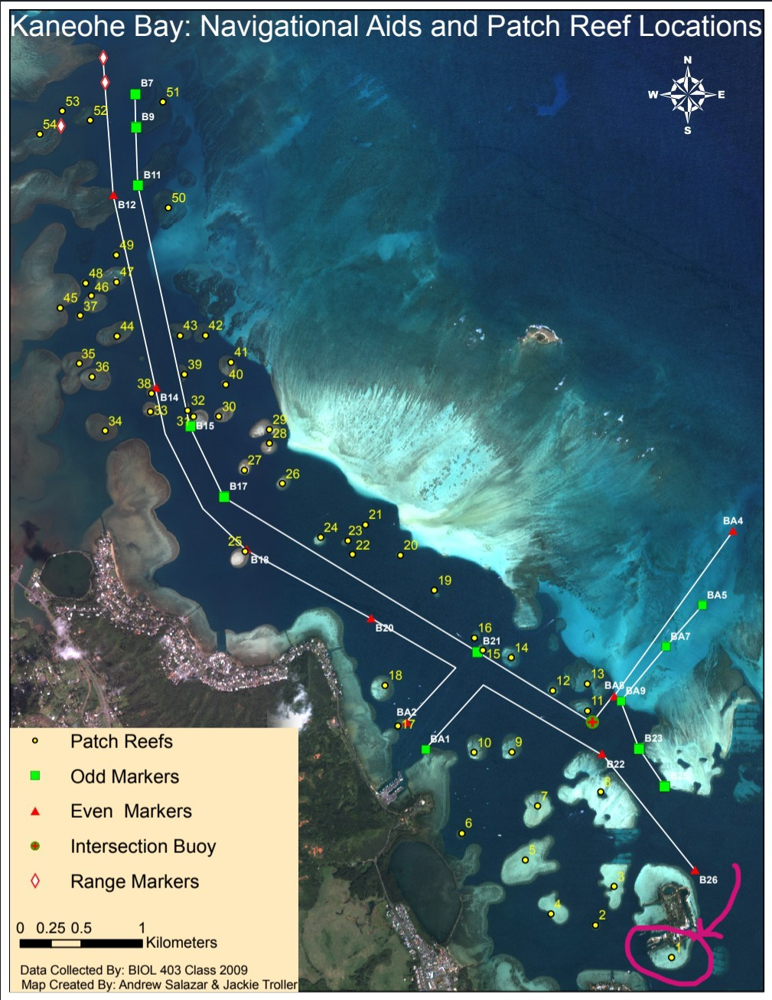
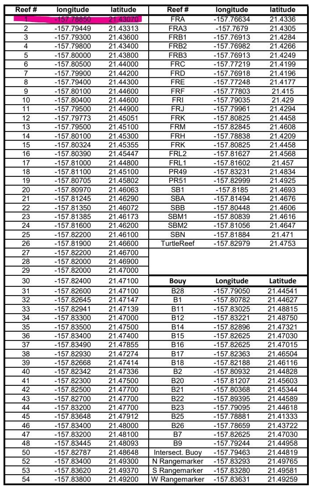
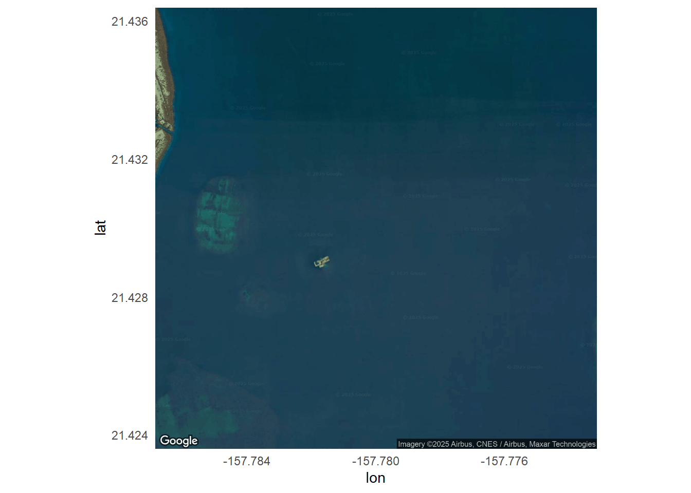
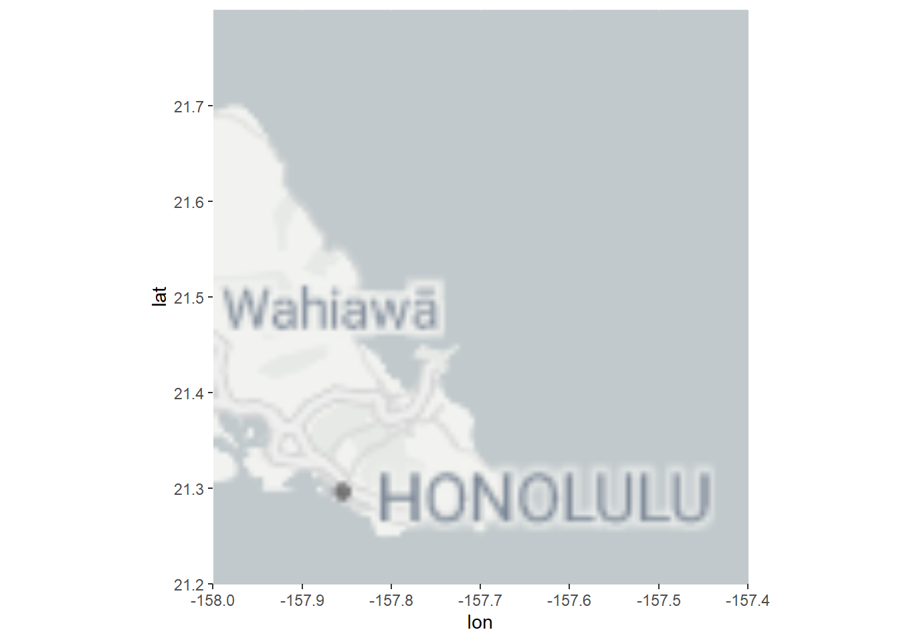
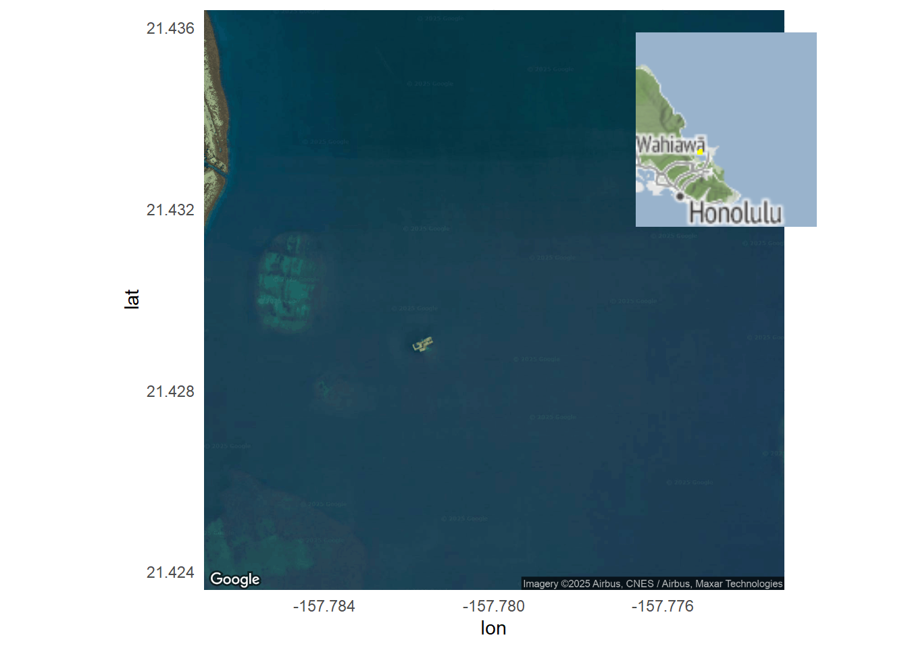
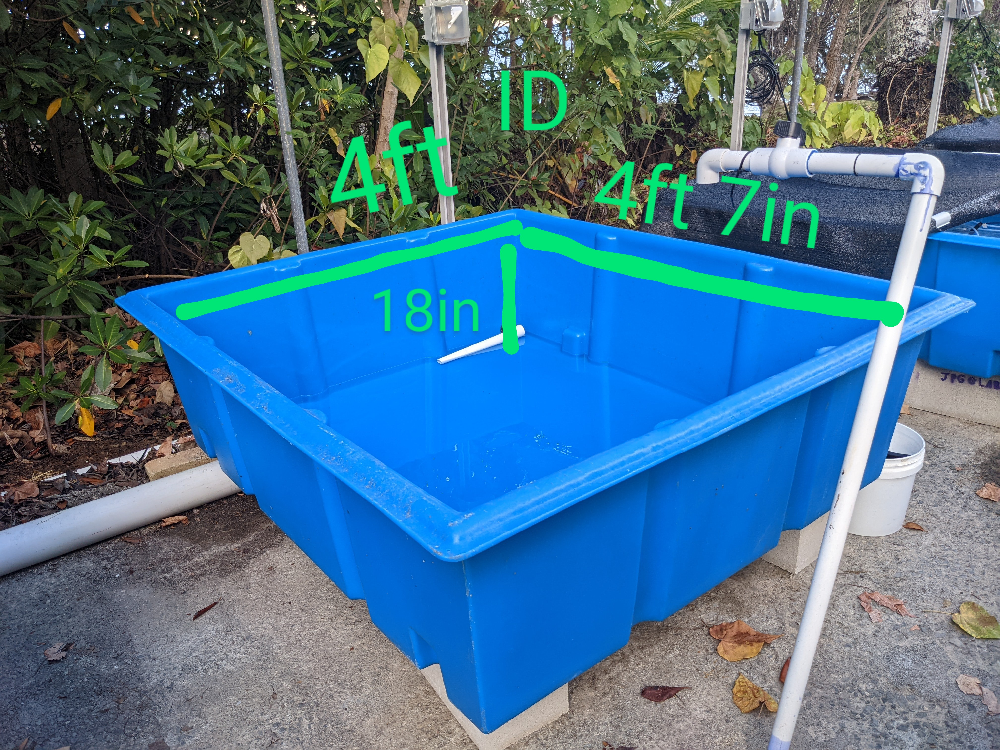

## Install packages
if (!require("ggmap", character.only = TRUE)){ install.packages("ggmap")}
if (!require("ggplot2", character.only = TRUE)){ install.packages("ggplot2")}
if (!require("cowplot", character.only = TRUE)){ install.packages("cowplot")}
if (!require("ggplotify", character.only = TRUE)){ install.packages("ggplotify")}
## Load packages
library(ggplotify)
library(tidyverse)
library(leaflet)
library(ggmap)
library(ggplot2)
library(cowplot)Goals
Describe the Montipora capitata coral colony collections under State of Hawai`i SAP2024-35 and tank acclimation prior to spawn night research activities in June & July of 2024.
Install & load packages
Coral collection location



Leaflet interactive map
coral_collection <- data.frame(
site = 'HIMB',
reef = 1,
lat = 21.431619,
lon = -157.787127,
collection_date = as.Date('06/30/2024', format = '%m/%d/%Y'),
colony_count = 20,
colony_size_cm = 30,
permit = 'SAP2024-35')
# Prepare the text for the tooltip:
mytext <- paste(
"Patch Reef: ", coral_collection$reef, "<br/>",
"Collection Date: ", coral_collection$collection_date) %>%
lapply(htmltools::HTML)
# Generate Map
KB <- leaflet(coral_collection) %>%
addTiles() %>%
setView( lng = -157.787347, lat = 21.431229, zoom = 18 ) %>%
addProviderTiles("Esri.WorldImagery") %>%
addCircleMarkers(~lon, ~lat,
fillColor = "orange", fillOpacity = 0.7, color="white", radius=8, stroke=FALSE,
label = mytext,
labelOptions = labelOptions( style = list("font-weight" = "normal", padding = "3px 8px"), textsize = "13px", direction = "auto")
)%>%
# Add a visible range (e.g., 100 meters)
addCircles(~lon, ~lat,
radius = 60, # in meters
color = "blue", fill = FALSE, weight = 2
)
# Display map
KBGoogle static ggmap with cowplot
Register your API key with register_google(key = "your api key here")
# Define coordinates
location <- c(lon = -157.78, lat = 21.43)
# Get map
main_basemap <- get_map(location = location, zoom = 16, maptype = "satellite")ℹ <https://maps.googleapis.com/maps/api/staticmap?center=21.43,-157.78&zoom=16&size=640x640&scale=2&maptype=satellite&language=en-EN&key=xxx-_B4kLVVnbt4gpWJqCcY>Google main map
# Plot
main_map <- ggmap(main_basemap) +
geom_point(
data = coral_collection,
aes(x = lon, y = lat),
color = "orange",
size = 4
) +
theme_minimal()
main_mapWarning: Removed 1 row containing missing values or values outside the scale range
(`geom_point()`).
Stadia main map
Register API key
bbox <- c(left = -158, bottom = 21.2, right = -157.4, top = 21.8)
get_stadiamap(
bbox,
zoom = 8,
maptype = "alidade_smooth"
) %>% ggmap()ℹ © Stadia Maps © Stamen Design © OpenMapTiles © OpenStreetMap contributors.
# Define coordinates
location <- c(lon = -157.787347, lat = 21.431215)
# Get map
main_basemap <- get_map(location = location, zoom = 17, maptype = "satellite")ℹ <https://maps.googleapis.com/maps/api/staticmap?center=21.431215,-157.787347&zoom=17&size=640x640&scale=2&maptype=satellite&language=en-EN&key=xxx-_B4kLVVnbt4gpWJqCcY>inset_basemap <- get_stadiamap(
bbox = c(left = -158, bottom = 21.2, right = -157.4, top = 21.8),
zoom = 8,
filetype = "stamen_watercolor"
)ℹ © Stadia Maps © Stamen Design © OpenMapTiles © OpenStreetMap contributors.# 1. Bounding box from main map
main_bbox <- attr(main_basemap, "bb")
# 2. Inset map with bounding box from main map
inset_map <- ggmap(inset_basemap) +
annotate("rect",
xmin = main_bbox$ll.lon, xmax = main_bbox$ur.lon,
ymin = main_bbox$ll.lat, ymax = main_bbox$ur.lat,
color = "yellow", fill = NA, linewidth = 1) +
theme_void()
# 3. Convert both to standard ggplot objects
main_map_plot <- as.ggplot(main_map)Warning: Removed 1 row containing missing values or values outside the scale range
(`geom_point()`).inset_map_plot <- as.ggplot(inset_map)
# 4. Compose using cowplot
final_plot <- ggdraw() +
draw_plot(main_map_plot) +
draw_plot(inset_map_plot, x = 0.65, y = 0.65, width = 0.3, height = 0.3)
print(final_plot)
Tank acclimation

In inches the tank dimensions are 48in W x 55in L x 18in D. The water height was variable, and determined by the level of the stand-pipe. During acclimation 30cm diameter corals were kept in water ~15in deep. Total volume of water that corals were acclimated in was therefore:
incube <- 48*15*55
print(paste(incube,'inches cubed'))[1] "39600 inches cubed"1in3 (1 cubic inch) is equal to 0.0043290043 US gallons.
The volume of water in gallons is therefore:
gal <- incube*0.0043290043
print(paste(gal, 'gallons'))[1] "171.42857028 gallons"Finally, 1US gallon = 3.78541 liters
L <- gal*3.78541
print(paste(L, 'liters'))[1] "648.927424223615 liters"We used 12qt(11.4L) cambro chambers as the individual bins for spawning.